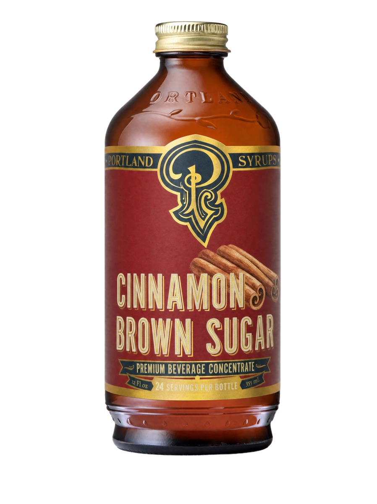
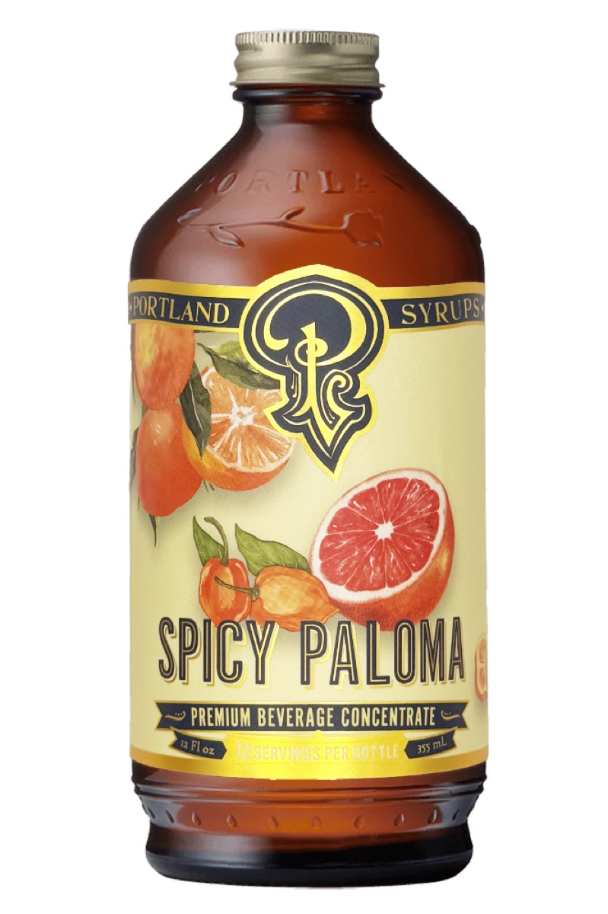
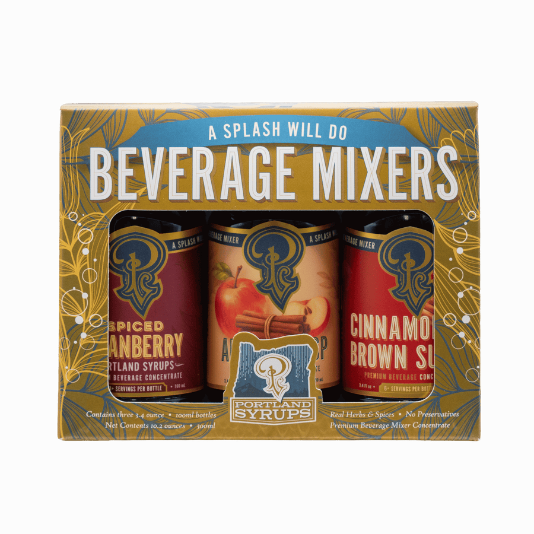

Cinnamon Brown Sugar Syrup
Cinnamon and brown-sugar syrup for drinks; a separate official recipe section gives serving ideas.
View official product ↗COFFEE • SODA • COCKTAILS
Discover syrups and a sampler, then estimate the bottles needed for your own service recipe.

Three real references. Confirm options, prices and availability at the official store.
Cinnamon and brown-sugar syrup for drinks; a separate official recipe section gives serving ideas.
View official product ↗
A spicy Paloma syrup from the official beverage-mixer range.
View official product ↗
A seasonal sampler of winter flavors; check the listing for its included bottles.
View official product ↗YOUR LOCAL SHORTLIST
Your selection stays in this browser. It does not reserve products or submit orders.
The official site has separate recipes for coffee, mocktails and cocktails.
Wholesale and private-label or bulk-project routes are published.
The selected products include individual syrups and a winter sampler; bottle capacities must be checked on each listing.